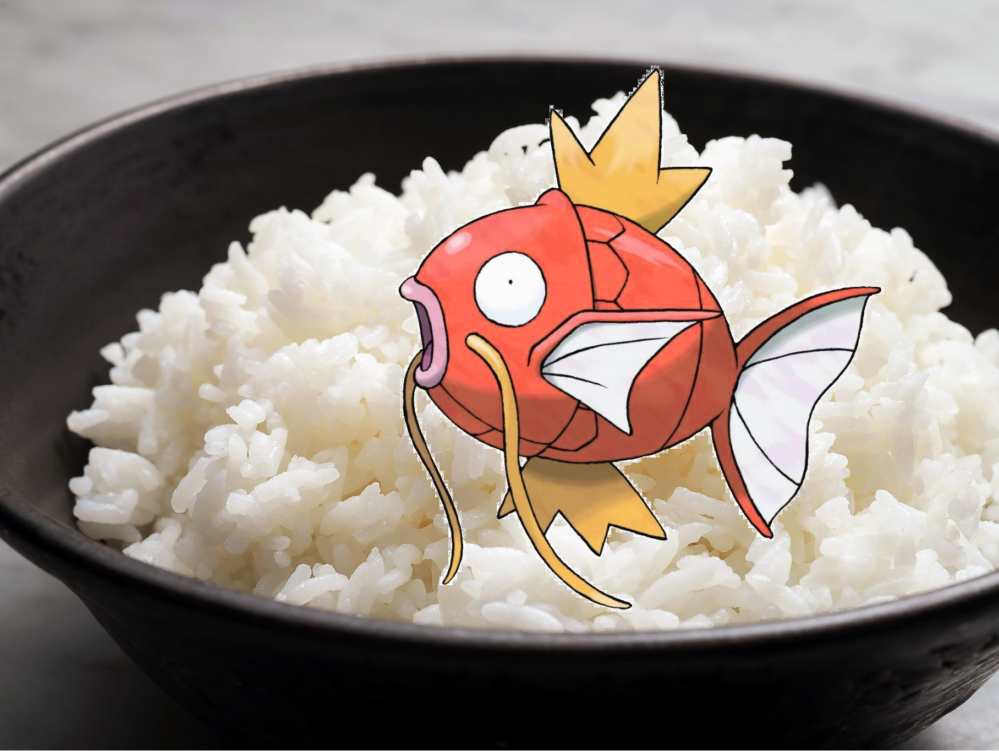

Sushi

Description:
El plato mas popular de Japan, es preparado in small portions.
Es aconsejable comer con palillos o cubiertos de madera, o de lo contrario iras al infierno.
Ingredients:
- Arroz del blanco, grano corto
- Alga Nori
- Relleno (a gusto): Pescado, Marisco, Vegetales, Huevo.
- Para el Sushi-zu: Vinagre de arroz, azucar y sal.
Steps:
- Lavar el arroz para quitarle el almidon, hasta que el agua salga clara.
- Poner misma cantidad de arroz y agua en una olla con el fuego al maximo hasta que hierva y la tapamos, la olla debe permanecer tapada todo el tiempo de la coccion y el reposo,
una vez que hierve bajamos el fuego al minimo hasta cocer (aprox 10 min o segun el arroz), luego apagamos el fuego y dejamos reposar, (siempre tapado) por 10 min
- Mientras reposa el arroz, preparamos el aderezo (sushi-zu), mezclar el vinagre con el azucar y la sal, y revolver hasta que se disuelva completamente.
- Luego de los 10 min de siesta del arroz, lo ponemos sobre una bandeja o tabla de madera. Vertemos el aderezo y vamos revolviendo con una cuchara despacio, para no romper el arroz,
mientras revolvemos, con un abanico vamos echando aire para enfriar el arroz, hasta que este a temperatura ambiente.
- Cortar los ingredientes en bastoncitos y en caso de vegetales, en laminas finas. Extendemos nuestra esterilla y ponemos un trozo de film transparente bien extendido por encima.
Colocamos una lamina de nori, con la parte brillante hacia abajo, orientando las lineas de la lamina en el mismo sentido de la esterilla.
- Debemos de tener un recipiente con agua para ir mojandonos las manos, porque el arroz es muy pegajoso. Con las manos humedecidas,
distribuimos una capa fina de arroz sobre la lamina nori, dejamos 1cm libre sobre uno de los lados de la lamina para cerrar.
Luego colocamos el relleno escogido a lo largo, a unos 3 dedos del borde por el que comenzamos a enrollar. Una vez listo el relleno, enrollamos ayudandonos con la esterilla y el film.
Vamos apretando despacio para que no se escape nada, al terminar, humedecemos apenas el borde del alga que habiamos dejado libre para que se pegue.
Para cortar los rolls, necesitaremos de un cuchillo bien afilado, que iremos mojando para que no se pegue el arroz.
Volver al Inicio